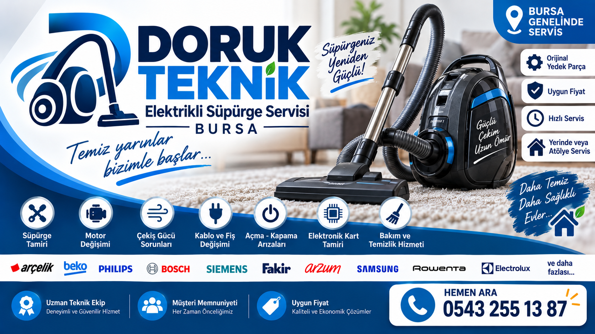

Süpürgenizin arızasını doğru tespit edip uygun çözüm için çalışıyoruz.
Çalışmayan ve arızalanan elektrikli süpürgeler için bakım ve onarım.
Arızalı veya performansı düşen süpürge motorlarının kontrolü ve değişimi.
Çekişi azalan süpürgelerde filtre, hava yolu ve motor kontrolleri.
Kablo, fiş ve elektrik bağlantılarındaki arızaların giderilmesi.
Anahtar ve açma-kapama sistemiyle ilgili arızaların kontrolü.
Uygun modellerde elektronik kart arızalarının teşhis ve onarımı.
Süpürgenin performansını korumaya yönelik bakım ve temizlik işlemleri.
Arızanızı anlatmak ve servis bilgisi almak için bizi arayabilirsiniz.
Bursa'da elektrikli süpürge tamiri ve teknik servis hizmetine odaklanan Doruk Teknik, farklı marka ve modellerde süpürge arızalarının tespiti ve onarımı için hizmet verir.
Not: Bu site yalnızca klasik elektrikli süpürge servis hizmetleri içindir; robot süpürge hizmeti sunulmamaktadır.
Başlıca elektrikli süpürge markaları
Bilgi almak ve servis talebi oluşturmak için hemen arayın.
📞 0543 255 13 87